Your illustrated A-Z starter project: build a robot that approaches a cardboard wall, reasons about distance uncertainty, pauses when needed, and verifies its stopping position.
AI-generated concept illustration. The purchased Kitronik robot will differ in colour and component placement; this is not a product photograph or assembly reference.
Hardware Kitronik :MOVE Motor BBC micro:bit V2
Planning budget €107.28 including delivery allowance and reserve
Prepared by Dr. Florent Ouabo Kamkumo· September 2026 · Companion to the IPHOREOS mathematical-engineering interface specification.
MINI-IPHOREOS / BUILD • UNDERSTAND • TEST
01 / Understand the finished project
You will place a small two-wheel robot on the floor, facing a broad cardboard target. It should approach and finish with the ultrasonic sensor face approximately 25 cm from the wall. The initial acceptable band is 21-29 cm. These are learning settings, not a precision-manufacturing specification.
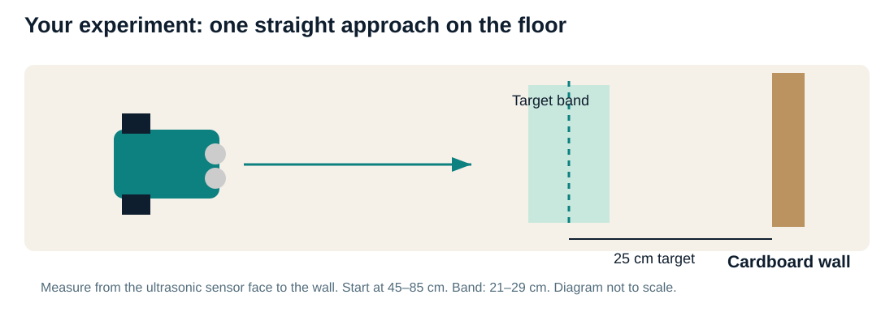
The lane is one-dimensional: no turning, object recognition, grasping or autonomous navigation is required.
Main IPHOREOS idea
Small implementation
Concept
Distance estimate and uncertainty
Event
SAMPLE, MOVE, DONE or ABORT
Context
Normal or careful, explicitly selected before the trial
Policy
Rule-based choice using a belief and a predicted next step
Verification
Several fresh measurements must support the target band
The robot does not infer its own context in this version. It also has no episodic memory or full expected-free-energy optimiser. Those are future extensions. The purpose is to make a complete, understandable loop work first.
MINI-IPHOREOS / BUILD • UNDERSTAND • TEST
02 / Follow the learning sequence
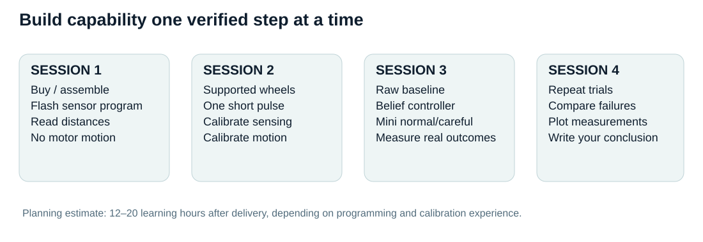
The order matters: stationary sensing comes before motor commands; calibration comes before autonomous motion.
Read and simulate. Open index.html, inspect the replay, and run the desktop tests if Python is installed.
Purchase and assemble. Use the exact model in the shopping list.
Flash sensor-only code. Compare readings with a ruler.
Test one pulse with wheels supported. Confirm direction and stopping.
Calibrate on the floor. Measure distance bias and total travel per pulse.
Run the three controllers. Start with the raw baseline, then belief and Mini.
Record real outcomes. Use independent ruler measurements and compare the methods.
Use the chapter number as your checklist. Do not skip a failed checkpoint: return to the earlier diagnostic program and find the cause.
Local stationery / hardware shop planning allowance
Removable floor tape
1
€4.00
Local stationery / hardware shop planning allowance
Broad cardboard target
1
€0.00
Reuse a packaging box reuse assumption
Laptop and USB data cable
1
€0.00
Existing equipment existing laptop + included cable
Delivery across suppliers
1
€15.00
Checkout-specific planning allowance
Price and replacement reserve
1
€15.00
Retained budget planning allowance
Core listed hardware: €63.28. The €44.38 chassis reference is the RS Germany listing including VAT; the €18.90 micro:bit Go reference is BerryBase including VAT. Listings were checked on 9 September 2026. Prices, stock and delivery must be reconfirmed at checkout.
Alternative chassis supplier:DigiKey Germany, 5683 showed €39.08 including VAT in its search listing. Delivery and final price were not confirmed. RobotShop EU and Kitronik provide additional purchasing routes.
MINI-IPHOREOS / BUILD • UNDERSTAND • TEST
04 / Your financial plan
This is a personal learning-project budget, with an existing laptop. It is not a business revenue forecast. The CSV shopping list and budget.json are editable so you can replace allowances with actual invoices.
Phase
Amount
Release condition
Free software / simulation
€0
Use existing computer and free tools
Robot, micro:bit and consumables
€77.28
Exact model and bundle contents confirmed
Delivery allowance
€15.00
Replace with actual combined checkout postage
Retained reserve
€15.00
Use only for a documented price difference or replacement
Total planned envelope
€107.28
Unspent reserve remains yours
Ways to reduce spending
Reuse a ruler, cardboard box and floor tape. Compare delivered totals rather than chassis prices alone. The Go bundle already includes a USB data cable, so do not buy another if your laptop has the matching port.
Optional expenses, outside the base total
If your computer only has USB-C, allow another €6 for a compatible USB-C to Micro-B data cable. A phone tripod or rechargeable-cell setup is optional; use existing equipment first. A replacement robot, laptop or professional engineering labour is not covered by this budget.
Running costs
Keep €5-10 as a future battery allowance if you run many sessions; actual life depends on motor load and use. There are no required cloud, AI API or software subscription fees. Your own time is not included in the cash total.
MINI-IPHOREOS / BUILD • UNDERSTAND • TEST
05 / Identify every component
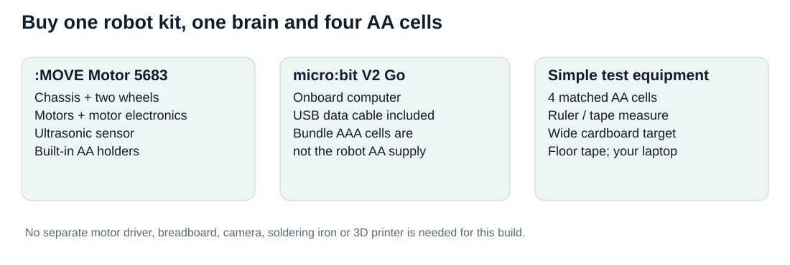
A compact kit avoids loose wiring and separate motor-electronics purchases.
micro:bit: the onboard computer. It stores and executes your program after you disconnect USB. Its buttons start or stop tests; its display shows status.
Motor electronics: already on the buggy. They convert the driver’s commands into electrical power for the wheels. A motor command of 45 is a vendor-scale setting from 0 to 255, not 45 cm/s.
Ultrasonic sensor: sends a sound pulse and times an echo. The two round transducers should face a broad target. Soft, tilted or narrow objects can give misleading echoes.
Battery supply: the buggy uses four AA cells and powers the inserted micro:bit through its connector. The separate AAA holder supplied with the Go bundle is not needed for normal buggy operation.
MINI-IPHOREOS / BUILD • UNDERSTAND • TEST
06 / Assemble without soldering
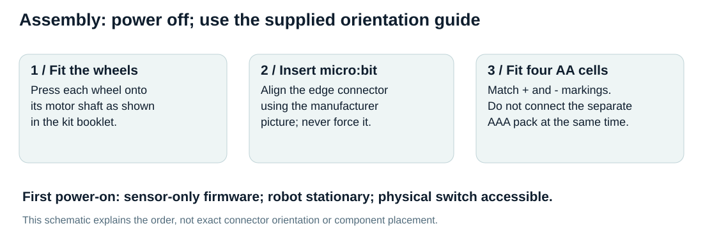
Use the exact manufacturer instructions supplied with your kit for mechanical orientation.
Keep the buggy switch OFF and remove batteries while fitting parts.
Fit the wheels according to the booklet. Check that each rotates freely without rubbing.
Identify the front ultrasonic sensor, edge connector, battery holders and switch.
Insert the micro:bit in the orientation shown in the booklet; do not force the board.
Install four matched AA cells following the polarity markings.
Before switching on, prepare the sensor-only program described next.
For stationary USB programming and console tests, keep the robot supported and motors disabled. Follow the kit’s USB/battery instructions; do not add the separate AAA battery pack to the assembled buggy. For floor movement, disconnect the USB cable so it cannot pull the robot or laptop.
MINI-IPHOREOS / BUILD • UNDERSTAND • TEST
07 / See exactly how software moves hardware
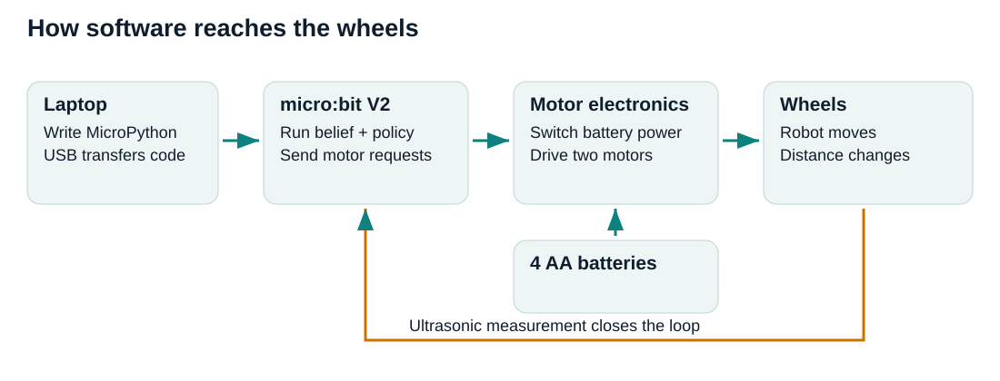
The physical adapter is small: your decision becomes a driver call; the driver operates the on-board motor electronics.
controller.observe(distance, elapsed_time) → "MOVE"
robot.pulse(left_pwm, right_pwm, 120)
→ driver.motorOn("l", "f", left_pwm)
→ driver.motorOn("r", "f", right_pwm)
→ short timed movement
→ driver.motorOff("l") and motorOff("r")
controller.record_move(actual_duration)
The controller never writes to electronics directly. hardware.py is the adapter. It uses Kitronik’s pinned MicroPython driver for the motor hardware. The downloaded source and MIT licence are preserved; the recorded commit is in docs/vendor_manifest.json.
Ultrasonic trigger and echo use P13 and P14, following Kitronik’s public MakeCode source. This project reads the echo with MicroPython’s timed-pulse function. The 58 microseconds-per-centimetre conversion is a starting value for micro:bit V2 and must be checked with a ruler.
MINI-IPHOREOS / BUILD • UNDERSTAND • TEST
08 / Put a program on the micro:bit
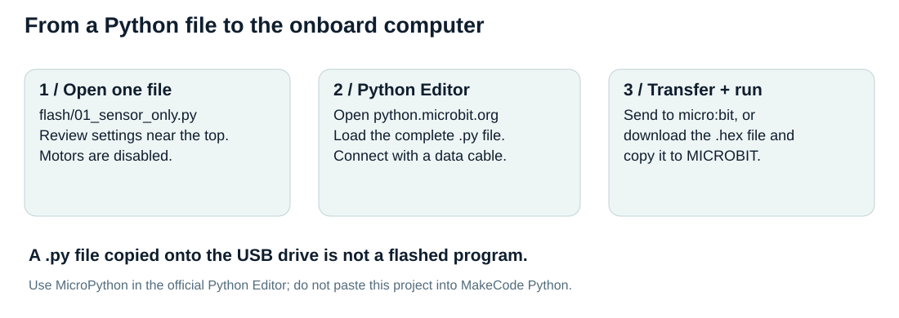
Single-file bundles keep the first upload simple: no support-module installation is required in the editor.
Open python.microbit.org on your laptop, preferably in a supported Chrome or Edge browser.
Use the editor’s Load/Open facility to load flash/01_sensor_only.py. If needed, open the file in a text editor, select all, and replace the editor’s code with the complete contents.
Connect the micro:bit using a USB data cable.
Use Send to micro:bit and select the connected device. If browser transfer is unavailable, download the generated .hex file and copy that file onto the MICROBIT USB drive.
Open the editor’s serial console and observe the program output. Exact labels may vary by editor version.
The full bundles are about tens of kilobytes, and have been syntax-checked on desktop Python. Actual MicroPython compilation, memory use and electrical operation still require your micro:bit V2 test.
MINI-IPHOREOS / BUILD • UNDERSTAND • TEST
09 / First experiment: measure without moving
The sensor program is intentionally the default. It never requests movement. Turn on the buggy power so the on-board electronics are supplied, keep it stationary, and look for the letter S.
The number above is an example of the output format, not a recorded hardware result. Press B to finish. If the program displays an X, read the serial error before trying anything else.
Collect your first dataset
Place the cardboard wall perpendicular to the ultrasonic beam.
Measure from the sensor face to the wall: 20 cm.
Record 20 readings separated by at least the programmed 150 ms.
Repeat at 30, 40 and 60 cm. Use the blank sensor CSV template.
Try a fresh position, such as 45 cm, as a held-out check.
What a problem looks like
None means missing or out-of-range echo, not “nothing ahead”. Repeated near-zero readings can indicate timing or pin problems. A stable 30 cm reading at a true 45 cm distance is a scale problem; do not repair it with a single bias offset.
MINI-IPHOREOS / BUILD • UNDERSTAND • TEST
10 / First movement: one supported-wheel pulse
Use flash/02_supported_wheel_test.py. Support the chassis so the wheels clear the floor, with hands and cables away from rotating parts. The program will refuse motion until you change MOTORS_ENABLED.
Make that edit near the top of the single-file bundle and flash it.
Press A and release. Both wheels should turn forward briefly and stop.
Check that forward would move the sensor toward the wall.
Test B during a repeated pulse. B requests a software stop; the physical switch remains your direct way to cut robot power.
Reset to repeat. This diagnostic runs one pulse, then terminates.
At low settings, a motor may not overcome friction. Increase gradually only while supported and record the setting at which both wheels start reliably. The training code caps commands at 80/255; if it cannot move reliably within that range, investigate batteries, friction or the driver before changing the cap.
Kitronik’s driver supports several board generations. A detected revision is printed, but detection alone is not proof of compatibility. Complete both motor-direction and sensor tests on your actual board.
MINI-IPHOREOS / BUILD • UNDERSTAND • TEST
11 / Calibrate the physical model
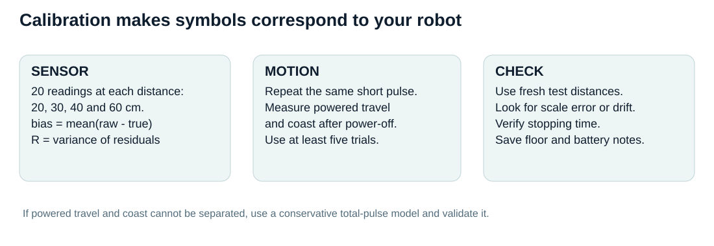
Calibration data come from your ruler/video measurements, not the simulation.
Sensor: subtract the mean measurement error as sensor_bias_cm. Estimate measurement_var from residuals. Plot error against distance and examine consecutive readings; a single constant bias and independent Gaussian noise may be inadequate.
Motion: use 03_pulse_calibration.py for repeated floor pulses, far from the wall. Keep the same PWM, pulse duration, floor and batteries. Phone video and a ruler can separate powered motion from coast after motor-off. Repeat at least five times, preferably ten.
Simpler alternative: if you cannot separate coast, measure total travel from one pulse until fully stopped. Set effective speed to mean total travel / 0.12 s and coast_cm = 0. This is a duration-specific total-pulse model: recalibrate if duration changes. Estimate motion_var from the variance of total pulse travel.
Set settling time longer than the longest observed coast time. Choose an extra travel margin that covers observed model underprediction, then validate on fresh pulses. Do not reduce the margin merely to make the robot finish more often.
MINI-IPHOREOS / BUILD • UNDERSTAND • TEST
12 / Enter and check your calibration
Copy the CSV templates under data/ to new filenames and fill them with measured values. Retain the blank originals.
Run either command as one line in PowerShell. The tool summarises the measurements; it does not enable motors or automatically overwrite configuration.
CALIBRATION = {
"sensor_bias_cm": ..., # raw minus true, cm
"measurement_var": ..., # cm squared
"variance_floor": ..., # residual uncertainty floor
"speed_cm_s": ..., # effective speed at selected PWM
"coast_cm": ..., # zero for total-pulse convention
"motion_var": ..., # variance per executed pulse
"extra_margin_cm": ... # extra allowance for underprediction
}
Replace the dots with your values. They are not valid Python values. The supplied numeric defaults are fictional starting assumptions used by the desktop demonstration.
For permanent changes, edit firmware/config.py then rebuild all bundles with python tools/bundle_firmware.py. Rebuilding overwrites files in flash/; save any direct bundle edits first.
MINI-IPHOREOS / BUILD • UNDERSTAND • TEST
13 / Understand the model you are running
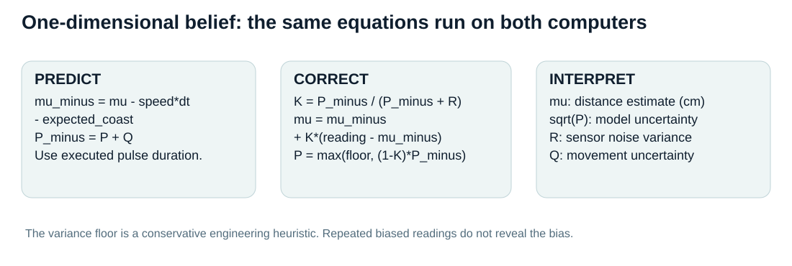
Centimetres are used consistently in this toy project. Convert explicitly if later integrating with an SI-based ROS system.
Hidden state: distance to the wall. Observation: ultrasonic reading after bias correction. Action: one short forward pulse or one more stationary reading.
The controller predicts how far the robot should travel, increases uncertainty, and then corrects its estimate using new evidence. A large prediction error triggers stationary remeasurement, not an immediate attempt to chase the outlier.
The code retains a variance floor to avoid arbitrarily precise confidence from repeated measurements. This is an engineering heuristic. It does not identify unknown bias, model correlation or guarantee calibrated coverage.
In a Gaussian model, the interval mu ± 1.96*sqrt(P) is nominally a 95% interval under the model assumptions. Its actual coverage must be measured independently; the software does not establish that the assumptions are true.
MINI-IPHOREOS / BUILD • UNDERSTAND • TEST
14 / Understand the four events
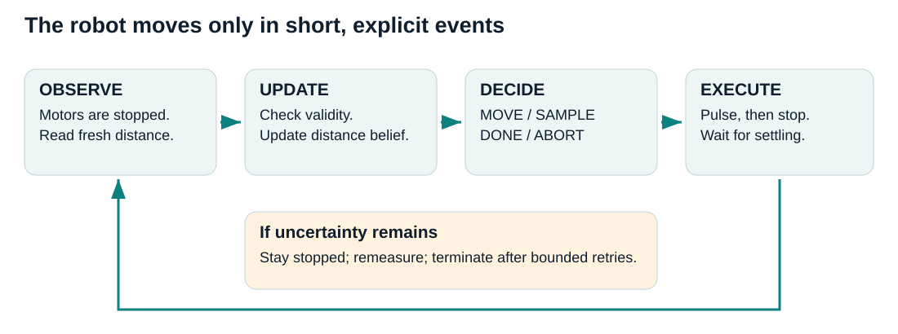
All sensing takes place after motor-off and a settling delay. The hardware adapter keeps motion pulses short.
Event
What the code does
What you observe
SAMPLE
Keep motors stopped; obtain another reading
Amber LEDs and ?
MOVE
Run one calibrated forward pulse; stop; settle
Brief motion and forward arrow
DONE
Latch termination after several confirming observations
Happy face; no automatic restart
ABORT
Latch failure/inconclusive state
X; check printed reason, then reset manually
Verification uses the target band 21-29 cm. For Mini, abs(mu-25) + k*sd ≤ 4 must hold for three consecutive accepted observations. Normal uses k=1.64; careful uses k=2.33. This is an interval-containment heuristic, not proof of physical success.
The program never autonomously reverses after overshoot. Reposition it manually after a terminal outcome. This keeps the first robot simple and avoids blind reverse motion with only a forward distance sensor.
MINI-IPHOREOS / BUILD • UNDERSTAND • TEST
15 / Add a reduced context philosophy
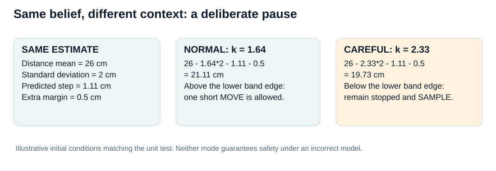
The normal/careful decision difference is covered by a desktop unit test.
The two modes share the same sensor, motors and belief. They differ in the multiplier used when judging whether another pulse fits within the allowed distance band. “Careful” also requires stronger interval containment at verification.
The context is set before flashing or running through CONTEXT, not inferred from the environment. Open 06_mini_normal.py or 07_mini_careful.py for the two ready-made variants.
A careful setting need not finish farther away: stronger verification can require a more central final estimate. Compare complete trajectories, sampling costs and final errors rather than assuming the name implies better performance.
MINI-IPHOREOS / BUILD • UNDERSTAND • TEST
16 / Run your first floor trial
Make a clear floor lane and secure a broad cardboard target. Remove cables and obstacles from the lane.
Place the sensor face about 60 cm from the wall and record the true starting distance.
Use the raw baseline bundle first. Enter measured calibration, set motor enable and calibration confirmation, then flash.
Disconnect USB. Place the robot straight, switch it on, and wait for A on the display.
Press A and release, then keep clear while watching the robot.
It should alternate short motion pulses and stops. Press B if needed; use the physical switch if the software does not respond.
At a happy face or X, turn off power and measure the final sensor-to-wall distance.
Record the result even if the robot failed, stopped too early or overshot.
Start with a broad, stationary target and low speed. No stairs, table edges, pets or people should be in the lane.
A program that displays “DONE” has only passed its internal criterion. Your independent ruler reading determines whether it actually finished within the agreed band.
MINI-IPHOREOS / BUILD • UNDERSTAND • TEST
17 / Compare three versions fairly
Program
Decision rule
Interpretation
04_raw_baseline.py
Move until raw reading crosses 25 cm; then verify several readings
A simple reference with common validity guards
05_belief_baseline.py
Stop when filtered mean reaches 25.5 cm; use belief-based verification
Does filtering help?
06_mini_normal.py / 07_mini_careful.py
Use uncertainty to select movement or remeasurement
Does explicit uncertainty/context help?
All versions retain common raw-clearance, invalid-data, inconsistency, pulse and timeout limits. This avoids comparing an unrestricted unsafe baseline with a constrained controller. Their terminal verification rules differ and are documented in the code; therefore report independent final-distance outcomes as well as internal DONE rates.
Try ten starting arrangements, repeated for each policy in alternating order. Keep the same floor, target and calibrated pulse settings. Record battery condition; rerun calibration if performance changes. Ten trials are an initial learning exercise, not a definitive study.
Calculate mean absolute error, fraction of all trials that both report DONE and finish in the band, false verification, abort rate, wall contacts and completion time. Do not remove difficult trials just because they make a controller look worse.
MINI-IPHOREOS / BUILD • UNDERSTAND • TEST
18 / Record measurements you can trust
data/physical_trials_template.csv records trial ID, policy, context, true start/end distance, robot terminal state, time, contact, invalid readings and battery notes. Measure truth with the ruler, independently of the ultrasonic reading.
Stationary serial recording
With the robot supported and motors disabled, either copy the Python Editor console text or use the optional recorder. Close the editor’s serial connection first so only one program opens the port.
Replace COM5 with the device’s actual port in Windows Device Manager. The recorder captures LOG rows at 115200 baud. Ctrl+C ends recording. Sensor rows can be paired with your ruler distances to prepare the calibration CSV.
Untethered movement trials
The supplied firmware prints diagnostics but does not save an on-board log. Once USB is disconnected, those printed rows are not retained. Use phone video, a stopwatch and the physical trial sheet for the first experiments. Do not drag a laptop cable behind a moving robot.
Future wireless logging is possible but adds hardware or communication work. It is not required for this starter project. Save raw records before calculating averages; do not replace failed readings with invented distances.
MINI-IPHOREOS / BUILD • UNDERSTAND • TEST
19 / Run the complete project on your laptop
The desktop path is optional for the first hardware upload, but useful for understanding and testing your mathematics. Open a terminal in the Mini_IPHOREOS folder.
The controller is dependency-free Python and is shared by the desktop simulation and MicroPython bundles. The desktop simulation adds randomised motion and sensor effects. Matplotlib produces the plots. NumPy is a desktop plotting dependency, not part of the robot firmware.
simulate.py runs 3,600 synthetic trials: three policies × two contexts × two scenarios × 300 seeds. It writes participant-free CSVs, a source-hash manifest and two plots. The simulator never connects to a robot.
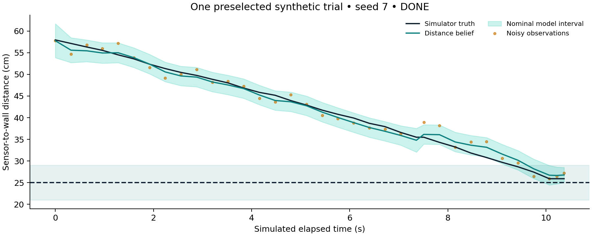
One preselected synthetic trajectory (seed 7). The interval represents the controller’s model uncertainty, not measured hardware accuracy.
Open index.html for a local replay of saved simulation traces. It requires no server, account or network connection.
MINI-IPHOREOS / BUILD • UNDERSTAND • TEST
20 / Read the simulation results critically
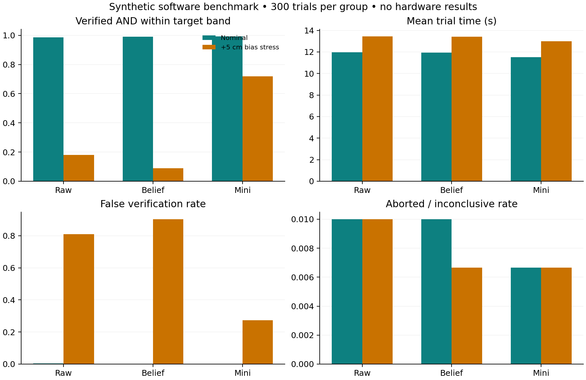
Synthetic software experiment, 300 trials per group. These numbers are not hardware performance claims.
Normal / nominal
Verified + in band
Mean absolute error
Mean time
raw
98.7%
1.39 cm
11.98 s
belief
99.0%
1.02 cm
11.94 s
mini
99.3%
1.75 cm
11.50 s
The mini controller’s nominal performance is feasible in this simple simulator, but it is not uniformly best: the belief baseline has lower mean absolute error. No inferential superiority claim is made from these descriptive results.
The +5 cm bias stress shows many false verifications, including Mini. This is a useful warning about model error: more repeated measurements do not reveal a constant bias. The careful mode can also fail more often under that misspecification.
Simulation ignores steering drift, beam shape, true motor electrical dynamics, surface variation and many hardware timing details. Seeds share starting conditions and random streams, but differing action sequences yield different measurement paths. Hardware validation remains necessary.
MINI-IPHOREOS / BUILD • UNDERSTAND • TEST
21 / Diagnose problems step by step
Symptom
Likely check
Next action
No MICROBIT drive
Charge-only cable, USB connection or port
Use the bundle data cable; try another port
Import / memory error on board
Wrong editor or partial file upload
Use official MicroPython Editor and one complete flash bundle
X before any movement
Enable flag, calibration flag or driver initialisation
Read serial error while stationary
None sensor values
No echo, tilted/soft target, power or sensor timing
Keep stopped; try a broad flat wall
Readings scaled incorrectly
Timing conversion or incompatible board/runtime
Recheck 20/40/60 cm; do not use a bias-only fix
One wheel stationary
Low battery, friction, wheel fit or PWM below start threshold
Return to supported-wheel test
Robot curves away
Unequal motor response or wheel traction
Trim left/right PWM and recalibrate total motion
Stops too far away
Large uncertainty, conservative margin, invalid readings
Check reason and calibration; do not remove guards blindly
Uncertainty floor, target band or persistent model mismatch
Record ABORT; inspect data rather than force DONE
Persistent I²C or board-version problems should be checked with the kit supplier and its current documentation. The vendor driver can mistake a missing/unpowered I²C board for another revision, so a printed version is not enough to establish compatibility.
MINI-IPHOREOS / BUILD • UNDERSTAND • TEST
22 / Know the limits before extending
Software limits in this implementation
The raw minimum clearance is 12 cm, with a 25 cm target. A pulse is 120 ms by default and capped at 250 ms by the adapter. The trial stops after 60 s, at most 80 moves, repeated invalid or inconsistent readings, or bounded stationary remeasurement. These are training defaults, not validated safety limits.
Distance is only measured while stopped. A sudden obstacle during a pulse may not be detected until that pulse ends. B is checked within the pulse loop, but a crashed interpreter or motor-driver fault can prevent software stopping. The kit switch and a clear supervised floor lane remain important.
What verification means here
A happy face means repeated readings satisfy the programmed target criterion. There are no encoders or independent motion sensors in this implementation. A frozen or biased sensor may defeat software checks. Independent ruler measurements and trial outcomes are therefore part of the project, not optional decoration.
Useful next steps, in order
Improve calibration and compare normal/careful modes.
Add statistical coverage checks using independent distance truth.
Model measurement correlation or estimate a bias using known reference positions.
Add a simple learned action-cost or information-value model.
Only then consider turning, line following or an optional gripper.
MINI-IPHOREOS / BUILD • UNDERSTAND • TEST
23 / Files, reproducibility and source links
Path
Purpose
index.html
Offline replay and project navigation
Tutorial_A_to_Z.html / .pdf
This illustrated manual
flash/
Seven complete single-file programs
firmware/
Editable modular controller, configuration and hardware adapter
tests/
Desktop numerical and adapter tests
simulate.py / results/
Synthetic experiments, plots, CSVs and manifest
data/
Blank physical measurement templates
shopping_list.csv / budget.json
Financial planning records
assets/
Concept art, editable schematics and computed plots
Keep vendor licence notices when sharing the bundles. Original project code is supplied under the MIT licence in this folder. Illustrations and tutorial text are provided for this project; generated art is explicitly labelled. Supplier listings are external references, not endorsements or completed purchases.